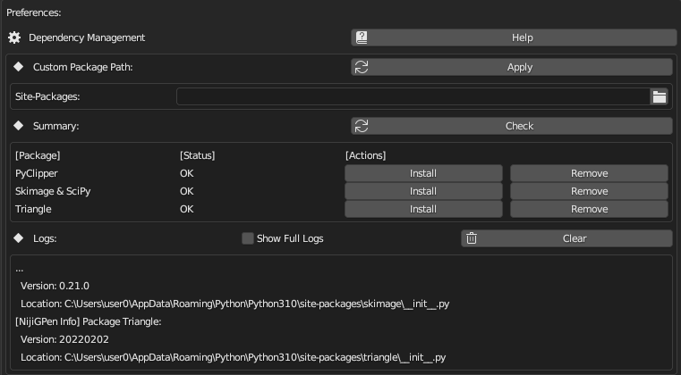

Python依赖项 #
NijiGPen的功能依赖于第三方的Python软件包，必须要单独地下载与安装它们。如果您没有使用过有类似需求的Blender插件，强烈建议首先阅读此页面。
软件包依赖总结 #
下面的表格总结了插件的每一类功能所需要的软件包，您可据此判断要安装哪些软件包。（例如，如果您仅想使用插件来导入Photoshop笔刷和渲染PSD文件，它们都不需要软件包，那么就不用采取任何额外措施，可以忽略本页面的剩余部分。）
| 插件功能 | PyClipper | Scipy & SkImage | Triangle |
|---|---|---|---|
| 多边形运算 | 必要 | ||
| 线稿清理 | 必要 | ||
| 线条塑形 | |||
| 智能填充 | 必要 | 必要 | |
| 3D网格生成 [注] | 必要 | 可选 | 可选 |
| 基于网格的绑骨 | |||
| 基于提示的绑骨 [注] | 可选 | 必要 | |
| 导入笔刷 | |||
| 导入线稿图片 | 必要 | ||
| 导入彩色图片 | 必要 | 必要 | |
| 剪贴板增强 | |||
| 渲染多图层PSD |
3D网格生成: 唯一必要的包只有
pyclipper，但安装其它包可以为法线插值生成网格的方法激活一些额外选项：
scipy可以激活计算顶点高度的高级求解器。triangle可以激活一种网格三角化的布线选项，它比Blender的自带方法有更高的布线质量。基于提示的绑骨: 使用套索形状的提示线条需要安装
pyclipper包，直线形状的提示线条则不需要。
操作系统的影响 #
本插件经测试在Windows/Linux/MacOS下均可使用，但有以下注意事项：
根据Blender的安装来源，可能会需要采取额外步骤：
- 便携版压缩包或Steam安装: 无需额外步骤。
- 官方安装程序: 如果Blender安装在系统文件夹，例如
C:\Program Files\Blender Foundation\，推荐在安装Python软件包前以管理员身份运行Blender。 - Microsoft Store: 所有Python软件包都会被安装到Blender以外的目录中，通常这个目录会在安装过程中被自动检测到。如果出现问题，请参阅备选方法1：自定义目录。
triangle不适用于M1/M2芯片设备，请跳过它的安装。（插件功能仅会受到轻微影响）。软件包安装 #

最直接的安装Python软件包的方法是使用设置面板中的依赖项管理器：
-
点击"Check"按钮来确认某一Python包是否已被安装，如果未被安装，请点击"Install"（需要联网）。
- 面板下方的日志区域会显示安装过程与结果。
-
“Remove"按钮可以删除已安装的Python包，但需要重启Blender才能反映出变化。
若安装失败，请在日志中查找原因或阅读下文的备选方法与疑难解答。
备选方法1：自定义目录 #
通常，Python软件包会与Blender被安装在相同目录，但也可以通过Custom Package Path选项来指定Blender读取软件包的目录。这个选项有如下作用：
- 在同时安装了多个Blender或Python版本的情况下，不需要重复下载Python包。
- 在没有Blender目录写入权限的情况下（例如Blender的Microsoft Store版本），仍可使用本插件。
在第二种情况下，本插件在安装过程中会自动更改安装目录并填入
Custom Package Path选项。如果没有成功自动填入，则需要手动寻找Python包被安装在哪里。下面是一些常见的安装目录："[Your Blender Directory]/3.x/python/lib/site-packages" (Windows) "%USERPROFILE%\AppData\Roaming\Python\Python310\site-packages" (Linux) "~/.local/lib/python3.10/site-packages"
备选方法2：手动安装 #
Python软件包是使用pip进行安装的。如果您有Python编程经验且熟悉pip，可以选择在命令行中手动为Blender安装Python软件包：
- 在命令行中进入Blender目录，对此可参考官方文档。
- 启用
pip模块：./python -m ensurepip --upgrade - 安装软件包：
./python -m pip install pyclipper triangle scikit-image
一些可能会用到的pip选项:--no-cache-dir、--force-reinstall、--only-binary。
疑难解答 #
Blender提示软件包安装成功，但设置面板中仍然显示"Not Installed"。
site-packages字样），并复制该路径填入自定义目录选项。
按下安装按钮后，Blender停止响应。
安装过程需要联网，并且需要一定时间来完成下载。然而如果Blender停止响应太久，有可能是网络出现问题，请检查VPN设置，或使用手动安装方法并选择合适的pip源。
设置面板可能会随Blender一起停止响应，导致无法查看日志。如果想要确保日志实时显示，可提前打开[窗口]-[切换系统控制台]。